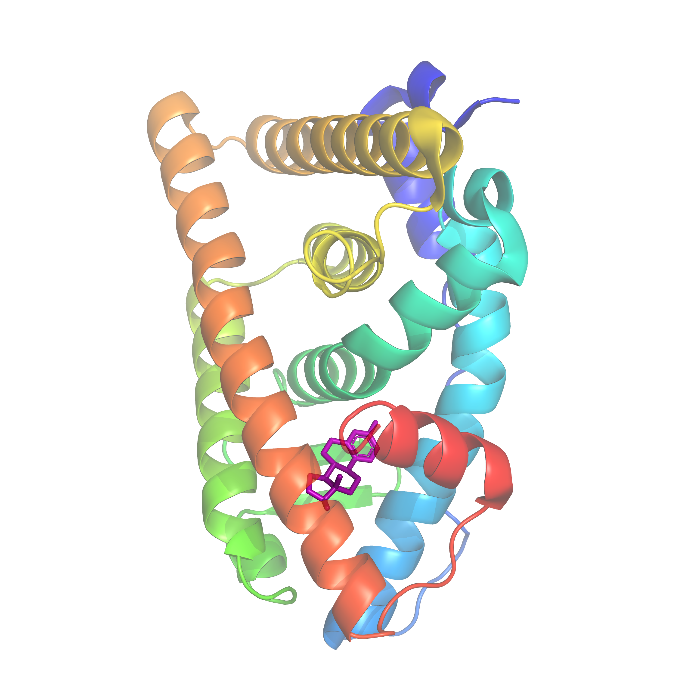
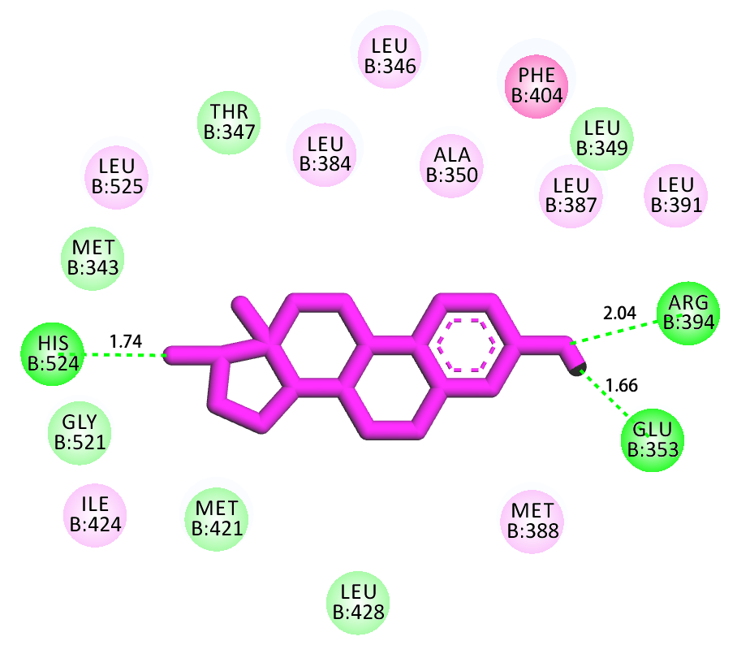
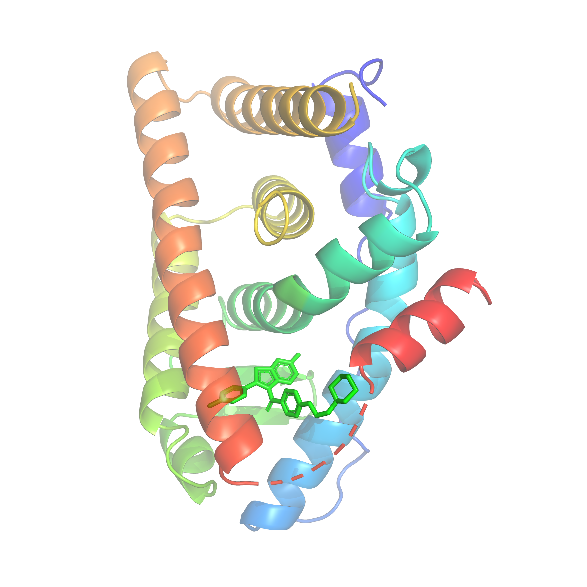
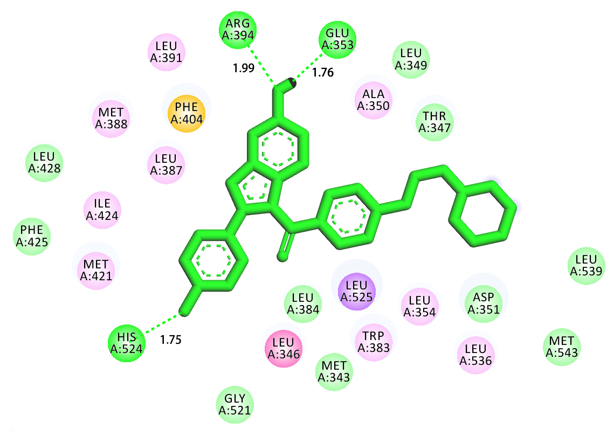

Research Assistant in Computational Chemistry
The Chinese University of Hong Kong (ShenZhen)
ShenZhen, China, 518172.
Email: peterlee@live.com
Linkedin | Github
|
|
|
|
- Sex: Man
- Nation: Han
- Education: Master
- Work experience: two years
- Tel: 13003652268
- Native Place: HeNan Province, China
- Address: The Chinese University of Hong Kong (Shenzhen), 2001 Longxiang Avenue, Longgang District, Shenzhen, 518172 Guangdong, P.R. CHINA
|
Learning and work experience
-
1. 2019.9 - Present The Chinese University of Hong Kong (Shenzhen) School of Life & Health Sciences Researcher Assistant in Computational Chemistry
Work content: Research on the mechanism of interaction between biological targets and compounds by using computational docking methods, biological data analysis, laboratory Linux system management, etc.
-
2. 2018.6 - 2019.9 Betta Pharmaceutical Co., Ltd. R&D Center (Beijing) Researcher in Computational Chemistry
Work content: Designing and simulating targeted drugs by using computational docking methods, construction and management of small molecule databases, etc.
-
3. 2015.9 - 2018.6 Shantou University Department of Chemistry Master of Computational Chemistry
Tutor: Professor Chen Guanghui
Topic: Theoretical study on the active constituents and targets of anti-tumor effects of Stellera chamaejasme.
-
4. 2014.6 - 2015.9 Jiangsu Alpha Pharmaceutical Co., Ltd. R&D Center (Nanjing) Assistant Researcher
Work content: Design and synthesis of oncology drugs, writing research reports, etc.
-
5. 2010.9 - 2014.6 Henan University of Traditional Chinese Medicine College of Pharmacy Bachelor of Pharmacy
Professional courses: organic chemistry; physical chemistry; quantum chemistry; medicinal chemistry; pharmacology.
Professional skills
-
1) Proficient in using Linux system.
-
2) Proficient in Python language.
-
3) Proficient in using Office software.
-
4) Good communication skills in both Chinese and English.
Professional qualification certificate
-
Computer secondary certificate
-
"Drug design software SYBYL" completion certificate
-
College English CET4 (484)
Awards and honors
-
Second Scholarship of Shantou University, 2017
-
"Huawei Cup" National Third Prize of the 13th National Graduate Mathematical Modeling Contest, 2016
-
Second Scholarship of Shantou University, 2016
-
Second Scholarship of Shantou University, 2015
-
Excellent Award of the 4th "Challenge Cup" College Students Extracurricular Academic Science and Technology Works Competition of Henan University of Traditional Chinese Medicine, 2011
Participate in research projects
-
Project Name: Research on Quantitative Calculation Technology of Pu Hydrolysis Polymerization
Project Source: Shantou University and China Institute of Atomic Energy Cooperation Project
Starting and ending year: July 15, 2017 - March 1, 2017
Content work: Theoretical chemical calculation and program compilation, through theoretical calculations to study the Pu ion hydrolysis process, thus providing guidance for the experiment, writing related papers.
-
Project Name: Theoretical study on the adsorption and separation performance of MOF and nanomaterials for UF6 and trace HF gases
Project Source: Shantou University and China Institute of Atomic Energy Cooperation Project
Starting and ending year: August 15, 2016 - May 01, 2017
Content work: Theoretical chemical calculation and program compilation, modification of MOFs and nanomaterials to find materials with high adsorption and separation properties for UF6 and trace HF gas, and write related papers.
Selected Publications
-
1. Yang, C X, Li P, et al. Mechanism for the reactivation of the peroxidase activity of human cyclooxygenases: investigation using phenol as a reducing cosubstrate[J]. Scientific Reports, 2020, 10(1): 1-14. (Yang, C X and Li P, are co-first authors)
[paper] (IF:4.0)
-
2. Wang Z Y, Zhao J W, Liu B, Cao C, Li P, et al. Universal materials for high performance violet-blue OLEDs (CIEy< 0.06) and PhOLEDs[J]. Dyes and Pigments, 2019, 163: 213-220.
[paper] (IF:4.6)
-
3. Yang H, Zhang H, Li P, et al.Theoretical study on the mechanism of Pu ion hydrolysis reaction[J]. Computer and Applied Chemistry,2018,35(08): 625-637
[paper] (Chinese core journals)
-
4. Wang Z Y, Zhao J W, Li P, et al. Novel phenanthroimidazole-based blue AIEgens: reversible mechanochromism, bipolar transporting properties, and electroluminescence [J]. New Journal of Chemistry, 2018, 42(11): 8924-8932.
[paper] (IF:3.3)
-
5. Liu X L, Chen G, Wang X J, Li P, et al. Theoretical study on the gas adsorption capacity and selectivity of CPM-200-In/Mg and CPM-200-In/Mg-X (-X=-NH2,-OH,-N,-F)[J]. Physical Chemistry Chemical Physics, 2017, 19(44): 29963-29974.
[paper] (IF:3.4)
-
6. Wang J M, Qu P R, Li P, et al. Antidepressant Effect of Buqi Yangyin Jieyu Tea[J]. Shizhen Guoguo, 2013, 24(5): 1045-10471.
[paper] (Chinese core journals)
Self-evaluation
-
During my undergraduate study at Henan University of Traditional Chinese Medicine, I paid great attention to the cultivation of my own experimental skills and the study of professional theoretical knowledge. I have strong independent thinking and ability to solve practical problems. I participated in the 4th Challenge Cup of Henan University of Traditional Chinese Medicine. "College students' extracurricular academic and scientific works competition" and won the award for excellence. At the same time, I participated in the innovative learning project during the undergraduate course and published a related core journal paper. I mastered the basic animal experiment operation methods and the use of general large-scale instruments, and developed a rigorous, careful and diligent experimental style.
-
During my master's degree at Shantou University, I paid attention to the improvement of my own scientific research ability and innovative ability. I was able to solve problems through various means, actively helping others in the laboratory, and writing academic papers and work summary skills. During the period, I published 3 SCI papers and 1 Chinese core journal. Has strong self-study and independent problem-solving ability, strong teamwork ability, strong ability to withstand pressure, and can quickly adapt to various environments. I am scientifically rigorous and conscientious, has strong research and innovation capabilities, am familiar with scientific research workflows, and has the experience and ability to write natural science fund project books. At the same time, I systematically study the basic theory of excessive chemistry, the processing method of intermolecular interaction force, and the basic theory of crystallography; skillfully use Python and Matlab to acquire and analyze computational data; manage the laboratory Linux system server, with analysis under Linux and Ability to process data; proficient in common drug design software such as Schrodinger, Discovery Studio, Sybyl, etc.; skilled in molecular dynamics simulation operations.
-
During the work of Betta Pharmaceutical Co., Ltd. , I focused on the combination of scientific research and practical application, established a small drug database related to the project, R-based fragment library. Completed target research and compound literature research. Combined with pharmacological data to analyze compound structure relationship. Designing new compounds and simulating their possible pharmacological activities. Encountering difficulties in the simulation, actively consulting the literature to find solutions, improving the ability to solve problems. Participating in the optimization of synthetic processes and related computational simulation of organic synthesis mechanisms. Report writing; through the exchange and cooperation with different colleagues in the work, improve the ability of communication and collaboration. Further work Schrodinger, Discovery Studio, Sybyl, Python and other tools to solve practical problems, enhance the use of related software and language.
-
During my work at the Chinese University of Hong Kong(Shenzhen), I focused on combining experimental data with theoretical simulations. On the Linux system, Schrodinger and Discovery Studio were used to study the interaction between biological targets and small molecule compounds, and the structure-activity relationship of the compounds was analyzed by combining pharmacological data. At the same time, NAMD software was used to simulate the trajectories of proteins and small molecules to complete the research report writing. In addition, I also manage the laboratory linux server and maintain its normal operation. At the same time, I use Python language to analyze relevant biological experimental data and complete related research work.
Some projects
|
|

|
|

|
|
The interaction of 2K18-E2: Docking analysis of the binding mode of E2(ER alpha agonist) inside the Esterogen Receptor alpha.
|
|
|

|
|

|
|
The interaction of 1ERR-Raloxifene: Docking analysis of the binding mode of Raloxifene(ER alpha antagonist) inside the Esterogen Receptor alpha.
|